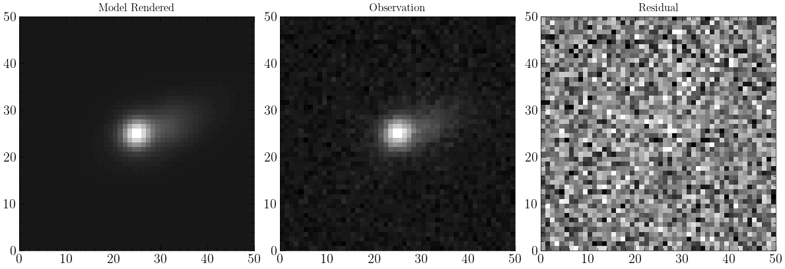
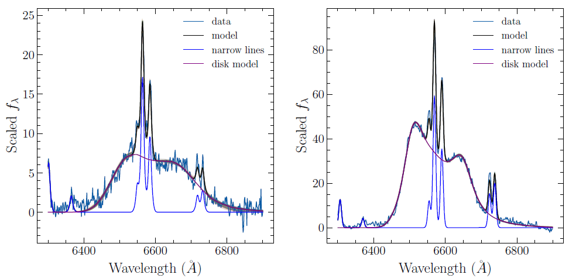

Charlotte Ward

Postdoctoral Research Associate Department of Astrophysical Sciences Princeton University
Publications (ADS)
Publications (ORCiD)
Princeton Webpage
Theme based on template from orderedlist
| Intro | Research | Outreach/EDI/Mentoring | Outside Astro | CV |
Research
Wide-field time-domain survey science: methodologies and applications
I develop image forward modeling techniques that combine multi-resolution imaging data for a variety of 'static' and time-domain science cases in preparation for the Legacy Survey of Space Time at Rubin Observatory and the Euclid and Roman space telescopes. I am currently contributing to Scarlet2, a new version of the Scarlet multi-resolution scene modeling and deblending code for astronomical imaging data. Scarlet2 is written in jax for GPU-compatibility, implements data-driven neural network priors on galaxy morphologies to improve models of blended and low S/N galaxies, and uses constraints on variable vs static sources to deblend transients from their host galaxies in multi-epoch imaging. We are using this software to confirm tidal disruption events from wandering black holes, model strongly lensed supernovae (in prep), and identify optical counterparts to radio pulsars (in prep).
My previous work with ZTF included using multi-resolution forward modeling to detect AGN spatially offset from their host galaxies, and to localize TDEs, optical counterparts to GW sources, and fast blue optical transients. I implemented a difference imaging pipeline for the detection of variable dwarf galaxy AGN in ZTF which cannot be identified by classical spectroscopic methods. In the early days of ZTF, I helped develop the initial real-bogus machine learning classifier for transient alerts and the alert filtering pipeline for the ZTF black holes working group using the AMPEL alert broker.
Supermassive black hole accretion: disk-emitters, changing-state AGN, and TDEs
I am interested in understanding the structure and evolution of AGN accretion disks, particularly in cases where a new disk has formed due to a tidal disruption event or the triggering of a new accretion episode in a previously quiescent AGN. My recent paper on ZTF AGN with 'double-peaked' broad lines from accretion disk emission showed that a large fraction of variable AGN have visible and evolving accretion disks. The broad-line evolution of the 'disk-emitting' AGN in ZTF is quite different to that observed from AGN during the onset of an accretion episode and disk-emitting tidal disruption events, which show more complex evolution. I have previously contributed to the detection and spectroscopic follow-up of the ZTF TDE sample as well as analysis of their host galaxies. I am currently working on a multi-wavelength population study of spectroscopically identified 'changing-state AGN', using the VLASS and VAST time-domain radio surveys.
